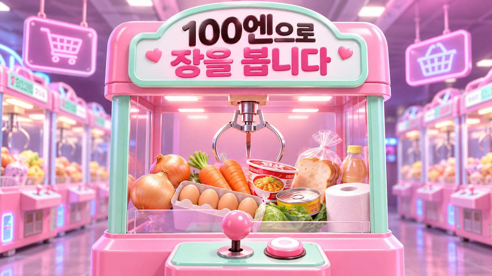

🕹 100엔 장보기 QUEST
INTERACTIVE VISUAL STORYSTAGE 1 / 8
INSERT COIN
100
PRESS START · 01
100엔을
넣어주세요.
장보기를 하러 왔는데, 계산대 대신 인형뽑기 기계가 기다리고 있습니다.
일본의 한 게임센터에서는 100엔을 넣으면 크레인 게임을 한 번 작동할 수 있습니다.
소리를 켠 상태에서 버튼을 누르면 효과음이 재생됩니다.

MACHINE UNLOCKED · 02
STAGE 02 · LOCATION UNLOCKED
여기가
슈퍼마켓이라고?
일본 사이타마현 교다시의 인형뽑기 전문점 에브리데이 교다점. 식료품과 생활용품을 경품으로 내건 슈퍼마켓 콘셉트의 매장입니다.
매장 2층에 설치된 게임기 약 120대.
PRIZE COLLECTION
STAGE 03 · CHOOSE A PRIZE
인형 대신
무엇을 뽑을까?
채소와 빵, 과자, 컵라면, 통조림, 음료는 물론 세제와 랩까지. 경품은 약 200종입니다.
상품을 하나 선택해 보세요.
CLAW CHALLENGE
CLAW TIME!
🧅🥕🍜
🕹️ ⭕
STAGE 04 · PLAY
집게를
움직여보세요!
이곳에서는 고리에 걸거나 집게로 상품을 밀어내는 방식으로 경품에 도전합니다. 초보자와 가족 고객을 위해 난도를 낮춘 게임기도 다수 배치했습니다.
집게 위치를 정한 뒤 내려보세요.
이 장면은 조작 방식 이해를 위한 모의 체험입니다. 실제 매장의 당첨 확률이나 결과를 재현하지 않습니다.
PRIZE ENCYCLOPEDIA
🥚달걀 10개들이 한 판
🧻화장지 12롤
🧃음료 4병 묶음
🍠고구마
STAGE 05 · PRIZE BOOK
이런 것도
경품이라고?
달걀 한 판은 파손 방지를 위해 완충재로 감쌌습니다. 뽑은 고구마를 현장에서 데워 먹을 수 있도록 전자레인지도 마련했습니다.
운이나 요령에 따라 일반 마트보다 저렴하게 얻을 수 있다는 것이 매장 측의 설명입니다. 여러 차례 도전하면 비용이 더 들 수도 있습니다.
+40%
방문객 증가 · 매장 관계자 설명
STAGE 06 · POPULARITY UP
사람들이
몰려든다
여러 차례 도전하는 손님과 경품을 가득 담은 봉투를 든 방문객들이 눈에 띄었습니다. 매장 관계자는 방문객이 이전보다 약 40% 늘었다고 밝혔습니다.
매장 측은 슈퍼마켓 특화 매장을 추가로 선보이고 싶다는 뜻도 전했습니다.
REALITY UNLOCKED
3분기 실질 GDP
전 분기 대비-0.02%
전 분기 대비-0.02%
GDP 연율 성장률-0.1%
개인소비 전 분기 대비-0.3%
9월 소비자물가 상승률
신선식품 제외 · 전년 동월 대비+2.1%
신선식품 제외 · 전년 동월 대비+2.1%
STAGE 07 · BEHIND THE GAME
게임 뒤에
숨은 현실
고물가로 생활비 부담이 커지면서 소비자들은 지출을 줄이려 합니다. 일본의 개인소비는 2개 분기 연속 감소했고, 9월 신선식품 제외 소비자물가지수는 102.3이었습니다.
게임의 재미 뒤에는 저렴하게 생활용품을 구하려는 소비 흐름이 있습니다.
🛍️ ✨
GAME COMPLETE
게임은 끝나도
장보기는 계속됩니다.
크레인 게임은 운과 요령으로 즐길 수 있습니다.
하지만 매일의 생활비를 게임의 운에 맡길 수는 없습니다.
FINAL STAGE · THE MESSAGE
장바구니에
담긴 현실
인형뽑기 기계가 슈퍼마켓이 된 풍경. 그 이색적인 인기에는 고물가 시대 소비자들의 생활비 부담이 비쳐 있습니다.
이 게임은 기사 내용을 체험하도록 재구성한 비주얼뉴스입니다. 실제 상품을 지급하거나 비용 절감을 보장하지 않습니다.